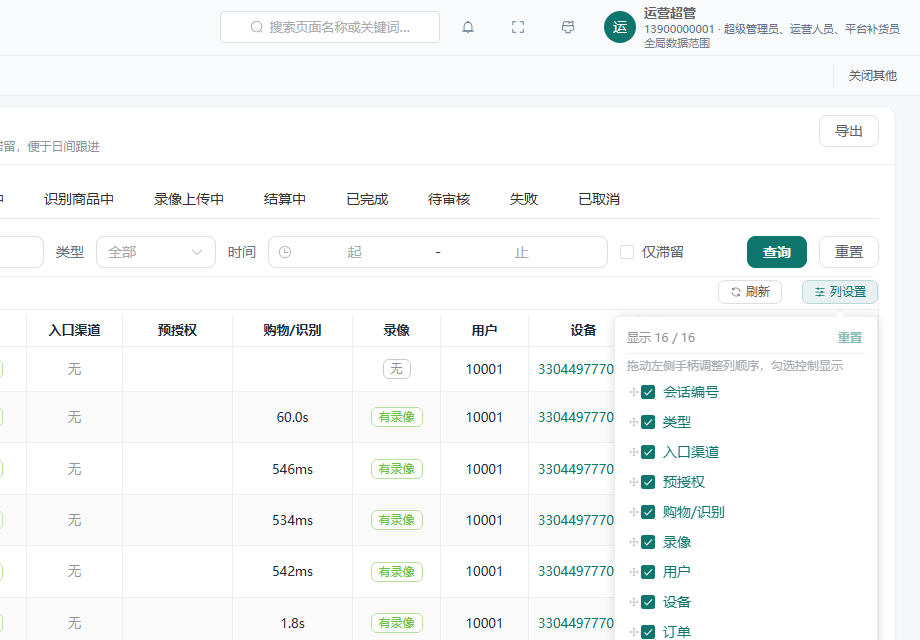
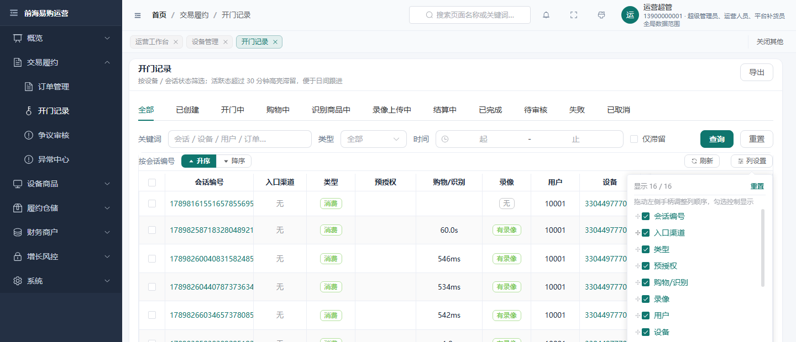

后台 UX 第三轮：列顺序拖拽 + 每页条数记忆
2026-09-24 · 承接 第二轮（列显隐 + 紧凑空态 + 吸附列过渡带）· 分支 dev
0. 任务与边界
用户指示「按推荐继续」＝上一轮给出的两个候选：列顺序自定义与每页条数按路由记忆。
两者都是主流 SaaS 后台列表页的标配（对标: 列设置面板支持拖拽排序、页长记忆）。
边界: 只动共享壳层 CrudTable.vue + 全局样式 + 一个新工具文件，不新增任何依赖（仓内无拖拽库，改用原生 Pointer Events 手搓）。
1. 改动清单
| 文件 | 改动 |
|---|---|
clients/admin-vue/src/utils/ui-prefs.ts 新增 | 每路由偏好读写（admin.ui.colOrder:<route> / admin.ui.pageSize:<route>），带 try/catch 降级（隐私模式 / 配额满时退化为「不记忆」，不影响当次会话） |
Clients/.../CrudTable.vue | ① 列设置面板从「纯勾选」升级为「手柄拖拽排序 + 勾选显隐」；操作列固定在右侧（fixed=right），位置不可改 ⇒ 锁定不可拖、只可显隐。② 页长选择接入偏好：改页长时写入、进页面时恢复（onSizeChangeRemember） |
clients/admin-vue/src/styles/main.css | .crud-cols__item 从「复选框即整行」改为「行容器 + 手柄 + 复选框」，加拖拽中 / 落点指示线样式 |
static/admin（183 个文件） | 重新构建的产物（入口 index-CPeNvkPZ.js，新功能串在 useCrudTable-CPcXR5QB.js） |
实现前提（读 EP 源码确认，不是猜的）
Element Plus 2.14.3 的 el-table 在 .hidden-columns 容器上装有 MutationObserver（childList+subtree），触发 updateOrderFns → updateColumnOrder。
⇒ DOM 层面直接重排列 vnode 是被官方支持的路径，不需要额外调用任何 API。
约束沿用第二轮的两个结论：列 vnode 必须显式 key；过滤/重排结果必须是扁平 vnode 数组（getColumnElIndex = indexOf 只看直接子节点）。
贴边自动滚动（长表拖远的前提）
会话列表 15 列，弹层列表高 264px、内容高 480px ⇒ 第 15 行（「时长」）在可视区外，而 Pointer Events 拖拽没有 HTML5 DnD 的原生边缘自动滚动。
已实现：指针按住列表上/下边缘 ≥ 2/3 区间时，用 requestAnimationFrame 以 8px/帧滚动 el-scrollbar__wrap，滚到头（scrollTop 不再变化）即停帧不空转。
2. 验证矩阵（真浏览器 + A/B 对照）
探针 .tmp/probe/verify-cols-r3.mjs：真实鼠标事件（move/down/steps/up）驱动拖拽；期望值用「用户语言」书写（把第 3 列拖到第 1 列前 ⇒ 它应成为第 2 列），不复用实现里的插入位算式。
| 组 | 命令 | 结果 | 判定 |
|---|---|---|---|
| A 正对照 ×4 | node .tmp/probe/verify-cols-r3.mjs | PASS 27 / FAIL 0（连跑 4 次全绿） | 功能成立且稳定 |
| B 负对照 | node .tmp/probe/verify-cols-r3.mjs --bogus | PASS 8 / FAIL 3（目标位故意写错为 14） | 判据非空管子（能真红） |
B 组覆盖的三条红：表头顺序 = 期望顺序、被拖的列落在存储的第 14 位、刷新后仍为拖拽后的顺序。
（负对照只在证明拖拽判据能红后提前收口——bogus 顺序会让后续手势的前置条件不成立，混在一起会把「判据红了」读成「探针崩了」。）
A 组 27 条断言覆盖
| 分组 | 断言（摘要） |
|---|---|
| 弹层结构 | 可拖行数 = 表头业务列数（15/15）；可拖行顺序与表头一致；固定行「操作（固定列）」存在 |
| 拖拽 A（可视区内） | 手柄 14×14 在弹层可视区内；拖动中源行带 is-dragging；落点线落在目标行上方（d=before 且锚在「类型」行）；拖后表头 = 期望顺序；弹层顺序随表头同步；持久化的是键序列且与弹层键序一致；被拖列落在存储第 1 位 |
| 刷新持久化 | reload 后表头仍为拖拽后顺序 |
| 拖拽 B（自动滚动） | 列表可滚（max=216）；按住顶边列表自动向上滚（216 → 0）；落点线移到第 1 行之前；拖后该列成为第 1 列 |
| 显隐（防回归） | 隐藏「录像」后表头少一列且确实不在；重置回声明顺序；重置把顺序偏好也清空（[]） |
| 页长记忆 | 候选里有 10/20/50；改 10 后偏好写入 admin.ui.pageSize:/sessions 且行数 ≤ 10；刷新后仍为 10；跨路由隔离（/devices 偏好仍为 null、页长仍为自己的默认 20） |
截图


注：第一张若在淡入动画中途截取会呈半透明（曾被误读为「弹层没有白底」）——已在截图前等动画落定。
3. 探针自己踩的四个坑（本轮最值钱的部分）
| # | 症状 | 根因（实测取证） | 修正 |
|---|---|---|---|
| 1 | openColsPopover is not defined | 函数已重命名为 ensureColsPopover，4 处调用点没跟上 | 统一改名 + node --check 入列 |
| 2 | 落点断言恒假（假红） | 提取正则 /is-drop(before|after)/ 捕获的是后缀，期望串却写了整类名 dropbefore | 期望改为 before，并把「有且仅有一条」升级为「唯一 + before + 锚在目标行」的语义断言 |
| 3 | 重置按钮点不到，时红时绿 | Escape 后 EP 有 0.3s 关闭过渡：盒子尚未归零时「盒子非空」判据把正在关的弹层当成开着 ⇒ 直接去点必败。实测见 dbg-cols-dom.mjs：关闭态 popper 带 display:none + aria-hidden=true | 开合判据改用 EP 显式设置的 aria-hidden，配合 waitForFunction 等状态落定，不再用固定 sleep 赌时序 |
| 4 | 等 aria-hidden=true 超时（收口失败） | 拖过手柄之后 Escape 关不掉弹层：onColDragStart 的 preventDefault() 阻止焦点进入弹层，而 EP 的 Escape 处理是焦点域的（点过复选框时 Esc 有效、拖动后无效） | 收口改为「先 Esc、1.2s 内没关就点外部」——后者正是真实用户在此情形的操作路径 |
4. 门禁 / 单测 / 部署
| 项 | 命令 | 结果 |
|---|---|---|
| 全量门禁链 | NODE_OPTIONS="--require=./.tmp/tools/nopipe.cjs" node scripts/run-audit-gates.mjs | 36 个门禁，失败 0（较上轮 +2：并发会话新增 check:shared-component-sync 等） |
| admin-vue 单测 | node node_modules/vitest/vitest.mjs run | 48/48（含 9 条 useCrudTable 断言 size: 20 —— 印证页长持久化必须落在 CrudTable 而不是 composable） |
| 类型检查 + 构建 | node scripts/build-admin.mjs（outDir 先移走以绕过宿主安全删除垫片，见第二轮 §5） | exit 0，0 个 TS 错误 |
| 部署一致性 | curl http://localhost:18080/admin/（必须 --noproxy "*"） | 运行中入口 = 本地产物入口 = index-CPeNvkPZ.js；新功能串确实在运行中的 chunk 里 |
check:admin-page-size 管的是「页长上限 ≤ 50」，不覆盖本轮新增的偏好键（admin.ui.colOrder/pageSize）。
偏好层的回归目前只由本探针守护（.tmp 下，不入 CI）。若要长期守住，需另立门禁——本轮不扩链。5. 提交
| 提交 | 内容 |
|---|---|
feat(admin-ui): 列顺序拖拽 + 每页条数按路由记忆 | CrudTable.vue / main.css / ui-prefs.ts / static/admin 产物 / 本报告 |
并发会话的 WIP（merchant-mp / consumer-mp / package.json / style-full-audit.mjs 等）一律未暂存，提交前后均以 git show --name-only 核对。